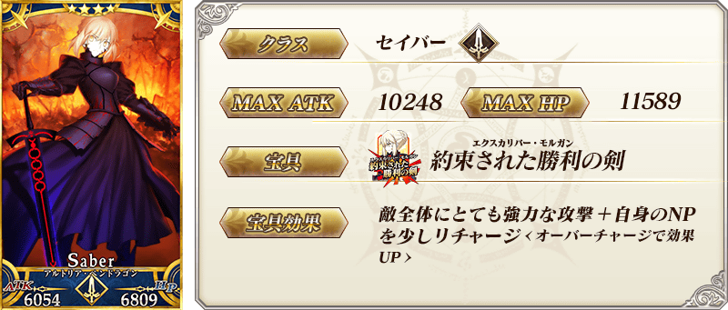
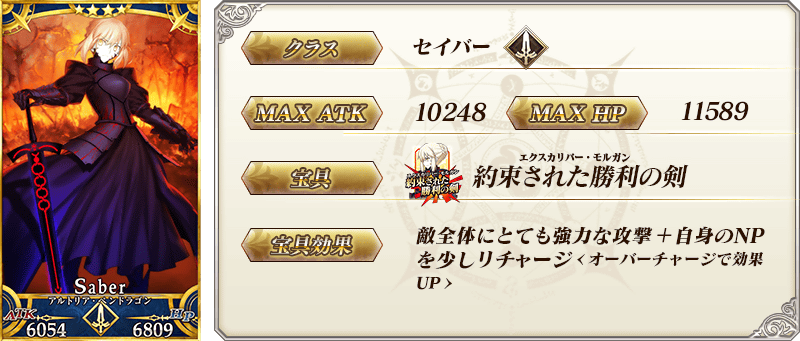
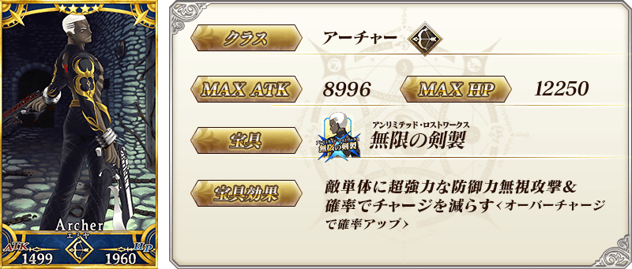
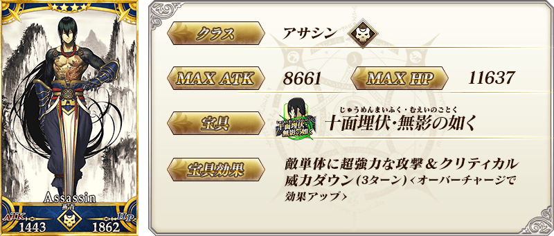
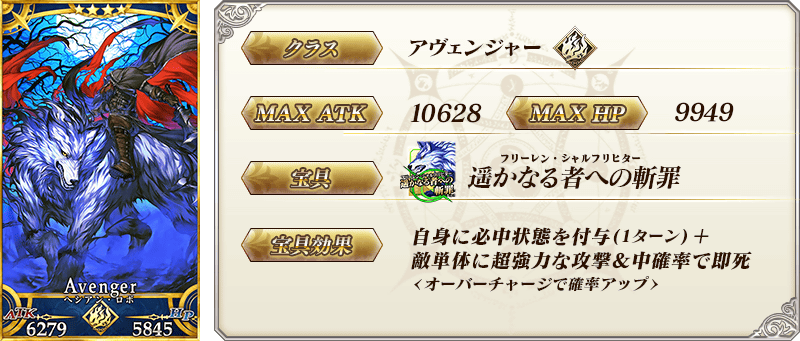

◆「亞種特異點Ⅰ漫畫發售記念Pick Up召喚(每日交替)」期間◆
期間:2020年2月1日(六) 17:00～2月15日(六) 11:59
舉辦期間限定「亞種特異點Ⅰ漫畫發售記念Pick Up召喚(每日交替)」！
本次從「Fate/Grand Order -Epic of Remnant- 亞種特異點Ⅰ 惡性隔絕魔境 新宿 新宿幻靈事件」關聯從者之中，「★4(SR)阿爾托莉亞・潘德拉剛〔Alter〕(Saber)」「★4(SR)Emiya〔Alter〕」「★4(SR)燕青(新宿的Assassin)」「★4(SR)海森・羅伯(新宿的Avenger)」以每日交替Pick Up！
Pick Up期間中，Pick Up對象從者的出現機率提升！
詳情請在聖晶石召喚畫面左下的召喚詳細確認。
11次召喚中確定1張★4(SR)以上和確定1位★3(R)以上的從者！ ※確定★4(SR)以上包含從者和概念禮裝。 ※本頁面皆為開發中圖片。會有與實際圖片相異的情況。
◆有關從者的注意◆
※請注意「亞種特異點Ⅰ漫畫發售記念Pick Up召喚(每日交替)」做為每日交替，「★4(SR)阿爾托莉亞・潘德拉剛〔Alter〕(Saber)」「★4(SR)Emiya〔Alter〕」就算Pick Up期間中也會有不被抽出的日子。
※Pick Up期間中，「★4(SR)阿爾托莉亞・潘德拉剛〔Alter〕(Saber)」「★4(SR)Emiya〔Alter〕」就算通過各章前也能入手。
※Pick Up對象從者在Pick Up期間結束後仍會在故事召喚被抽出。
※關於隱藏真名尚未判明的從者，透過主線關卡的進行會讓從者及一部份寶具的名稱變化。
◆有關從者真名的注意◆
在2018年12月31日(二) 23:00以後新配信的主線故事及期間限定活動、一部份關卡、宣傳活動及召喚中，會顯示隱藏真名的對象從者真名。
※2018年12月31日(一) 22:59前已經配信的主線故事、復刻活動、一部份關卡中不在此限。
◆「亞種特異點Ⅰ漫畫發售記念Pick Up召喚(每日交替)」Pick Up內容◆
| Pick Up期間 | 每日交替Pick Up | |
|---|---|---|
| 2/1(六) 17:00～ 2/3(一) 22:59 |
★4 阿爾托莉亞・潘德拉剛〔Alter〕(Saber) ★4 Emiya〔Alter〕 ★4 燕青(新宿的Assassin) ★4 海森・羅伯(新宿的Avenger) |
|
| 2/3(一) 23:00～ 2/5(三) 22:59 |
★4 阿爾托莉亞・潘德拉剛〔Alter〕(Saber) | |
| 2/5(三) 23:00～ 2/7(五) 22:59 |
★4 Emiya〔Alter〕 | |
| 2/7(五) 23:00～ 2/9(日) 22:59 |
★4 燕青(新宿的Assassin) | |
| 2/9(日) 23:00～ 2/11(二) 22:59 |
★4 海森・羅伯(新宿的Avenger) | |
| 2/11(二) 23:00～2/12(三) 22:59 | ★4 阿爾托莉亞・潘德拉剛〔Alter〕(Saber) | |
| 2/12(三) 23:00～ 2/15(六) 11:59 |
★4 阿爾托莉亞・潘德拉剛〔Alter〕(Saber) ★4 Emiya〔Alter〕 ★4 燕青(新宿的Assassin) ★4 海森・羅伯(新宿的Avenger) |
|
※請注意會以每日交替變更Pick Up的從者。
 
※上述「★4(SR)阿爾托莉亞・潘德拉剛〔Alter〕(Saber)」的卡面為靈基再臨第2階段。

※上述「★4(SR)阿爾托莉亞・潘德拉剛〔Alter〕(Saber)」的卡面為靈基再臨第2階段。


 ※上述「★4(SR)海森・羅伯(新宿的Avenger)」的卡面為靈基再臨第2階段。

翻新於「Fate/Grand Order -Epic of Remnant- 亞種特異點Ⅰ 惡性隔絕魔境 新宿 新宿幻靈事件」活躍的「★4(SR)阿爾托莉亞・潘德拉剛〔Alter〕(Saber)」攻擊演出！
※只限普通攻擊的翻新。寶具演出沒有變更。
◆實施時間◆
2020年2月1日(六) 17:00～

「★4(SR)阿爾托莉亞・潘德拉剛〔Alter〕(Saber)」的靈衣開放權在達文西工房的「魔力稜鏡交換」追加！
用魔力稜鏡1000個的話，可入手上述靈衣開放權。
另外，想要靈衣開放的話，除了靈衣開放權外必須再加上一些開放條件。
◆追加時間◆
2020年2月1日(六) 17:00～
※在「魔力稜鏡交換」追加的靈衣「漆黑騎士王ver新宿1999」開放權為永久，沒有交換期限。
◆有關靈衣開放權的注意◆
※本次追加的「★4(SR)阿爾托莉亞・潘德拉剛〔Alter〕(Saber)」的靈衣會伴随外觀變化一部份語音。
※請注意未持有「★4(SR)阿爾托莉亞・潘德拉剛〔Alter〕(Saber)」的情況，可入手靈衣開放權，但無法進行靈衣開放。
◆追加道具(恒常)◆
靈衣「漆黑騎士王ver新宿1999」開放權
| 追加道具 | 能交換次數 | 1次交換所需的 魔力稜鏡數 |
|---|---|---|
| 靈衣「漆黑騎士王ver新宿1999」 開放權 |
1次 | 1000個 |


「靈衣開放」是自強化畫面進行。
※「靈衣開放」後會自動切換戰鬥角色和圖示。若想回到「靈衣開放」前的狀態和變成其他再臨階段的情況，可自從者詳細畫面變更。 ※進行「靈衣開放」也不會對職階和數值等有所變化。

介紹開放靈衣「漆黑騎士王ver新宿1999」的「★4(SR)阿爾托莉亞・潘德拉剛〔Alter〕(Saber)」寶具演出！
在「Fate/Grand Order」官方網站內的公告中，以影片公開寶具演出，敬請確認。
介紹「★4(SR)阿爾托莉亞・潘德拉剛〔Alter〕(Saber)」「★4(SR)Emiya〔Alter〕」「★4(SR)燕青(新宿的Assassin)」「★4(SR)海森・羅伯(新宿的Avenger)」的寶具演出！
在「Fate/Grand Order」官方網站內的公告中，以影片公開寶具演出，敬請確認。
其他還有，『「Fate/Grand Order -Epic of Remnant-」亞種特異點Ⅰ 惡性隔絕魔境 新宿 新宿幻靈事件漫畫發售記念宣傳活動』同時舉辦！
關於詳情，請自下述橫幅確認。
■「Fate/Grand Order -Epic of Remnant-」亞種特異點Ⅰ 惡性隔絕魔境 新宿 新宿幻靈事件漫畫發售記念宣傳活動詳細情報